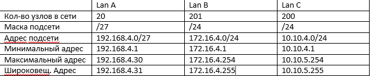
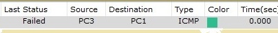
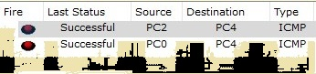

Лабораторная работа #1
Работа с Github
Задачи:
-
Регистрация на GitHub.
-
Создать персональную веб страницу-отчет с использованием html, css, js.
-
Загрузить персональную веб страницу-отчет в репозиторий ИДМ-19-03 по курсу "Интернет-технологии" на GitHub.
Лабораторная работа #2
ПроектЛабораторная работа 3
Выполнение:1. Рассчитываем данные для таблицы IP адресов
2. Разместим два компьютера и коммутатор. Настроим между ними адресацию.
3. Соединяем коммутаторы между собой и выполняем проверку работоспособности сети.
4. Настраиваем интерфейсы маршрутизатора. Проверяем сеть.

5. Проверяем сеть. Отправляем сообщение из А в В, а далее из В в С.
